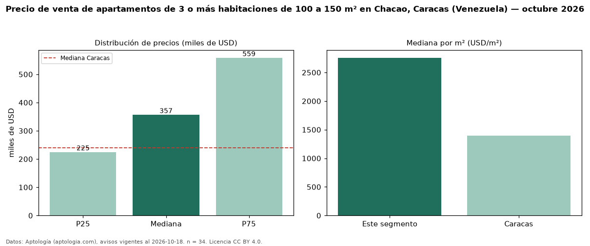

Precio de venta de apartamentos de 3 o más habitaciones de 100 a 150 m² en Chacao, Caracas (Venezuela) — octubre 2026
USD 357.000 es el precio mediano de apartamentos de 3 o más habitaciones de 100 a 150 m² en venta en Chacao, Caracas (Venezuela) (n = 34 avisos). Frente a la mediana de los apartamentos de 3 o más habitaciones en venta de Chacao (USD 550.000, n = 156), queda 35 % por debajo; este segmento reúne el 22 % de esos avisos. Por metro cuadrado, la mediana es USD 2.757/m² (n = 34), 27 % por encima de los apartamentos de 3 o más habitaciones en venta de Chacao (USD 2.173/m²). El área mediana anunciada es 133 m². La mitad central de los avisos va de USD 225.125 a USD 558.607 (razón 2,5), una dispersión alta. La mediana de todos los apartamentos en venta de Caracas es USD 240.000 (+49 % de diferencia). 91 % de los avisos con el dato declara estacionamiento o cochera. Datos: Aptología (aptologia.com), CC BY 4.0 — https://www.aptologia.com/ve/venta/caracas/chacao. Archivos: PDF, CSV con las cifras y gráfica PNG.

| Avisos únicos | 34 |
|---|---|
| Percentil 25 | COP 225.125 |
| Mediana | COP 357.000 |
| Percentil 75 | COP 558.607 |
| Mediana por m² | COP 2.757 |
Fuente: avisos vigentes de portales inmobiliarios recopilados por Aptología, deduplicados (mínimo 30 avisos únicos por celda). Precios pedidos, no cerrados. Fecha: 2026-10-18.